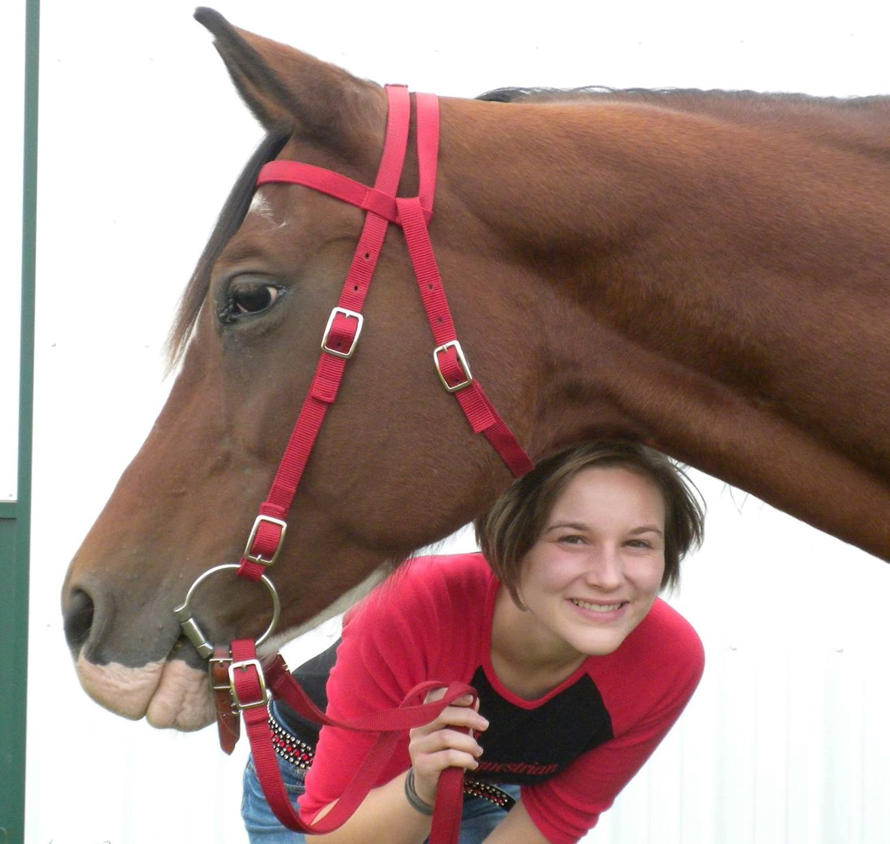
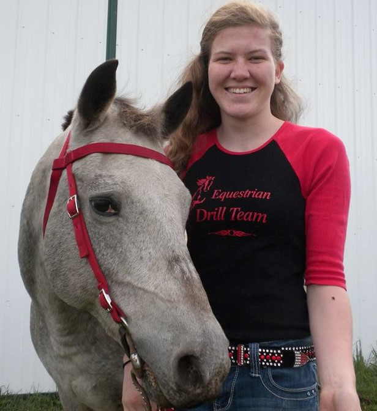
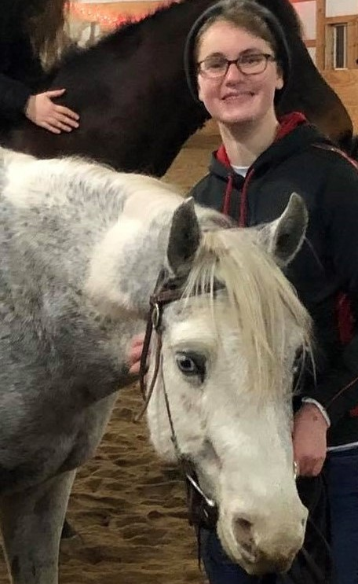
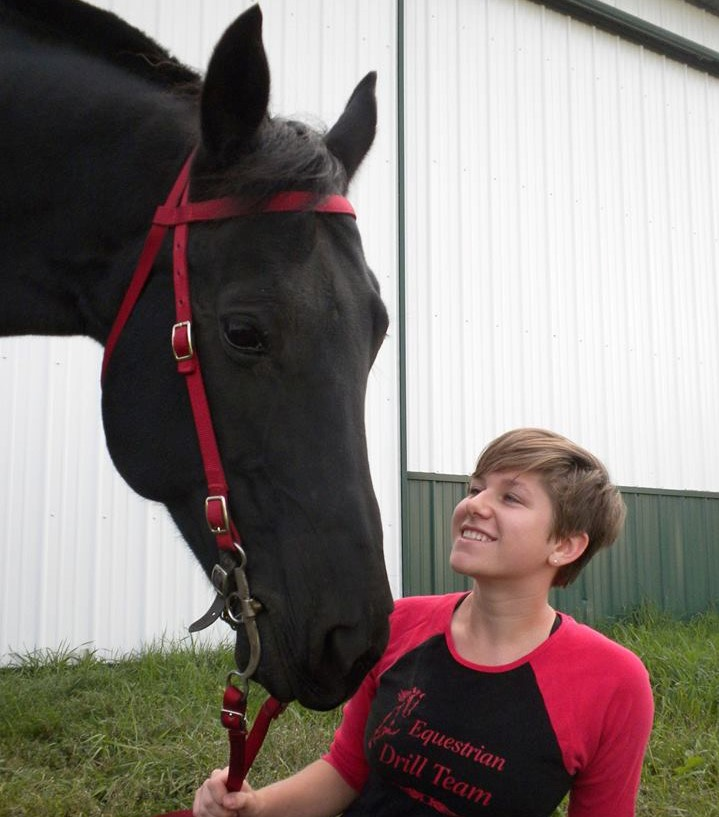

"Hello! I’m Grace, a Grinnell College alumna from Minnesota. I am a riding instructor at Triple V Stables and the coach of the two Grinnell College drill teams. I also have the pleasure of riding my horse Ghost with the advanced team. It has been an honor to work with such talented and passionate young women and horses over the past few years and I’m very proud of the teams we have this semester! I believe that drill team offers a safe, supportive community in which these young women can build lasting friendships and learn lifelong skills such as communication, teamwork, patience, dedication, and perseverance."
"Hi! I’m Alice and I’m a second-year intended Spanish major and Environmental Studies concentrator from Maryland. This year I am riding Razz on the advanced team. Razz is an incredible horse, she works so hard, plus she’s absolutely adorable! I love drill team because it is a fantastic group of people and horses! I feel so lucky to have found such a fun and dedicated group!"
"I’m Maggie, a third-year intended Biology major and Environmental Studies concentrator from Connecticut. This is my third year on drill team and I ride Eclipse on the advanced team. My favorite part about him is how much enthusiasm and energy he brings every day, even if it means we often struggle to stand still! He’s also super sweet and wants to be friends with everyone he meets. Drill team lets me hang around horses with people who love them as much as I do. I’ve been riding for over half my life and am thrilled to find such a cool group of people (and horses!) to work and ride with!"
"Hi, my name is Anna and I’m from Wisconsin. I’m a second-year Political Science major with an Environmental Studies concentration and I ride Cupcake on the advanced drill team. This is my second year of drill and I’m so grateful for the wonderful opportunity that is drill team and I’m so glad to be riding alongside some amazing people! This year I am extremely fortunate to be able to ride my own sassy mare on drill. Cupcake, in three words, is sassy, food-motivated and adorable (although she occasionally uses her cuteness for evil). I joined drill because I wanted a way to still be involved with horses when I first got to Grinnell. Drill, however, has really become a staple part of my week (and life here at Grinnell) and I’m grateful I got to introduce Cupcake to the awesomeness that is the Grinnell College Drill Team!"
"Hi! My name is Alissa and I’m a second-year at Grinnell. I was born in Paris and moved to Shanghai when I was ten, but my family now lives in Sydney, Australia. I plan to be an Economics and Computer Science double major and I ride Chino on the advanced team. Even though he’s new to drill team, Chino is adorable and a fast learner! I love horseback riding and have been taking dressage lessons since lower school. Though switching to Western for drill team was a bit of a challenge at first, I’m incredibly grateful that I can still interact with horses here at Grinnell and be a part of our little community of horse-lovers."
"Hello! I’m Natalie, a fourth-year studying Sociology and interested in a career in education. I’m from Omaha, Nebraska. I joined the drill team two years ago to interact with positive people, challenge myself, and relax and have fun while riding. I ride Blue on the advanced team and he seems to love drill team as much as I do! The vibrant, hardworking, and sometimes ridiculous personalities of my fellow teammates and our horses make our practices the highlight of my week."